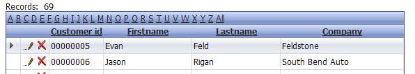
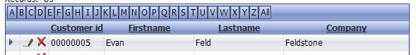
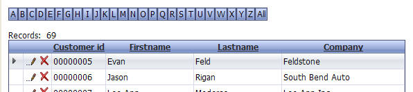
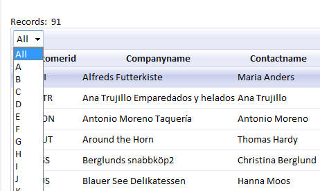
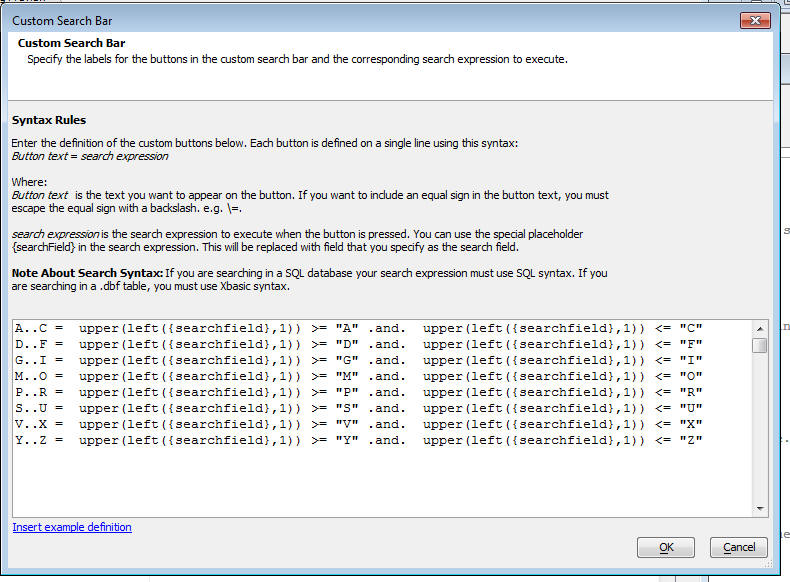

'Alphabet'/Custom Button Search
'Alphabet' buttons provide a convenient metaphor for searching for records in your Grid. When you click on a particular alphabet button, the Grid is filtered to show all records in a specified field that start with the letter that you clicked. For example, if you specify that your Alphabet buttons should search on the lastname field, when you click on the 'B' button, all records with lastnames that start with 'B' are shown.
Alphabet Buttons

'Alphabet' buttons showing 'hyperlink' style buttons.

'Alphabet' buttons showing 'button' style buttons.
You can position the 'Alphabet' buttons inside the Grid, as shown in the above two images, or outside the Grid, as shown below.

'Alphabet' buttons showing how the buttons can be positioned outside the Grid.
You can configure your 'Alphabet' buttons to also show buttons for 0 through 9 by checking the 'Include numeric buttons' property.
You can configure your 'Alphabet' buttons to show as choices in a dropdown box rather than as a list of buttons or hyperlinks by setting the button style to 'Dropdown'.

'Alphabet' buttons configured to display as a dropdown.
Custom Buttons
You are not limited to a pre-defined list of buttons showing A through Z when you turn on the Alphabet buttons feature. You can completely customize the buttons that are shown in the button bar and the corresponding search that is performed when you click a button. To customize the buttons, select 'Custom Buttons' in the 'Search bar type' prompt. Then click the smart field in the 'Custom search definition' property. The following dialog will appear:

The button definition is to the left of the equal sign and the corresponding filter expression is to the right of the equal sign.
You can display arbitrary HTML as the button definition (as long as you set the button style to be button or hyperlink - not dropdown). This means (for example) that you can include images in the buttons.